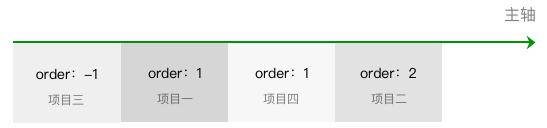

设置项目，用于设置项目的尺寸、位置，以及对项目的对齐方式做特殊设置。
order 属性
设置项目沿主轴方向上的排列顺序，数值越小，排列越靠前。属性值为整数。
.item{
order: 0（默认值） | <integer>
}

图4-12 order
flex-shrink 属性
当项目在主轴方向上溢出时，通过设置项目收缩因子来压缩项目适应容器。属性值为项目的收缩因子，属性值取非负数。
.item{
flex-shrink: 1（默认值） | <number>
}
.item1{
width: 120px;
flex-shrink: 2;
}
.item2{
width: 150px;
flex-shrink: 3;
}
.item3{// 项目3未设置flex-shrink，默认flex-shrink值为1
width: 180px;
}
为了加深理解，我们举个例子：
一个宽度为400px的容器，里面的三个项目width分别为120px，150px，180px。（imrdr: 溢出为（120+150+180 = 450；450-400 = 50；））分别对这项目1和项目2设置flex-shrink值为2和3。
.container{
display: flex;
width: 400px; // 容器宽度为400px
}
在这个例子中，项目溢出 400 - (120 + 150 + 180) = -50px。计算压缩量时总权重为各个项目的宽度乘以flex-shrink的总和，这个例子压缩总权重为120 * 2 + 150 * 3+ 180 * 1 = 870。各个项目压缩空间大小为总溢出空间乘以项目宽度乘以flex-shrink除以总权重：
item1的最终宽度为：120 - 50 * 120 * 2 / 870 ≈ 106px
item2的最终宽度为：150 - 50 * 150 * 3 / 870 ≈ 124px
item3的最终宽度为：180 - 50 * 180 * 1 / 870 ≈ 169px
其中计算时候值如果为小数，则向下取整。

图4-13 flex-shrink
需要注意一点，当项目的压缩因子相加小于1时，参与计算的溢出空间不等于完整的溢出空间。在上面例子的基础上，我们改变各个项目的flex-shrink。
.container{
display: flex;
width: 400px; // 容器宽度为400px
}
.item1{
width: 120px;
flex-shrink: 0.1;
}
.item2{
width: 150px;
flex-shrink: 0.2;
}
.item3{
width: 180px;
flex-shrink: 0.3;
}
总权重为：120 * 0.1 + 150 * 0.2 + 180 * 0.3 = 96。参与计算的溢出空间不再是50px，而是50 * (0.1 + 0.2 + 0.3) / 1 =30：
item1的最终宽度为：120 - 30 * 120 * 0.1 / 96 ≈ 116px
item2的最终宽度为：150 - 30 * 150 * 0.2 / 96 ≈ 140px
item3的最终宽度为：180 - 30 * 180 * 0.3 / 96 ≈ 163px
flex-grow 属性
当项目在主轴方向上还有剩余空间时，通过设置项目扩张因子进行剩余空间的分配。属性值为项目的扩张因子，属性值取非负数。
.item{
flex-grow: 0（默认值） | <number>
}
为了加深理解，我们举个例子：
一个宽度为400px的容器，里面的三个项目width分别为80px，120px，140px。分别对这项目1和项目2设置flex-grow值为3和1。
.container{
display: flex;
width: 400px; // 容器宽度为400px
}
.item1{
width: 80px;
flex-grow: 3;
}
.item2{
width: 120px;
flex-grow: 1;
}
.item3{// 项目3未设置flex-grow，默认flex-grow值为0
width: 140px;
}
在这个例子中，容器的剩余空间为 400 - (80 + 120 + 140) = 60px。剩余空间按 60 / (3 + 1 + 0) = 15px进行分配：
item1的最终宽度为：80+ (15 * 3) = 125px
item2的最终宽度为：120 + (15 * 1) = 135px
item3的最终宽度为：140 + (15 * 0) =140px
图4-14 flex-grow
需要注意一点，当项目的扩张因子相加小于1时，剩余空间按除以1进行分配。在上面例子的基础上，我们改变各个项目的flex-grow。
.container{
display: flex;
width: 400px; // 容器宽度为400px
}
.item1{
width: 50px;
flex-grow: 0.1;
}
.item2{
width: 80px;
flex-grow: 0.3;
}
.item3{
width: 110px;
flex-grow: 0.2;
}
在这个例子中，容器的剩余空间为 400 - (50 + 80 + 110) = 160px。由于项目的flex-grow相加0.1 + 0.3 + 0.2 = 0.6小于1，剩余空间按 160 / 1 = 160px划分。例子中的项目宽度分别为：
item1的最终宽度为：50 + (160 * 0.1) = 66px
item2的最终宽度为：80 + (160 * 0.3) = 128px
item3的最终宽度为：110 + (160 * 0.2) = 142px
flex-basis 属性
当容器设置flex-direction为row或row-reverse时，flex-basis和width同时存在，flex-basis优先级高于width，也就是此时flex-basis代替项目的width属性。
当容器设置flex-direction为column或column-reverse时，flex-basis和height同时存在，flex-basis优先级高于height，也就是此时flex-basis代替项目的height属性。
需要注意的是，当flex-basis和width（或height），其中一个属性值为auto时，非auto的优先级更高。
.item{
flex-basis: auto（默认值） | <number>px
}
图4-15 flex-basis
flex 属性
是flex-grow，flex-shrink，flex-basis的简写方式。
值设置为none，等价于00 auto。
值设置为auto，等价于1 1 auto。
.item{
flex: none | auto | @flex-grow @flex-shrink@flex-basis
}
align-self 属性
设置项目在行中交叉轴方向上的对齐方式，用于覆盖容器的align-items，这么做可以对项目的对齐方式做特殊处理。默认属性值为auto，继承容器的align-items值，当容器没有设置align-items时，属性值为stretch。
.item{
align-self: auto（默认值） | flex-start | center | flex-end | baseline |stretch
}

图4-16 align-self
最后一次编辑于 2019年08月19日 （未经腾讯允许，不得转载）